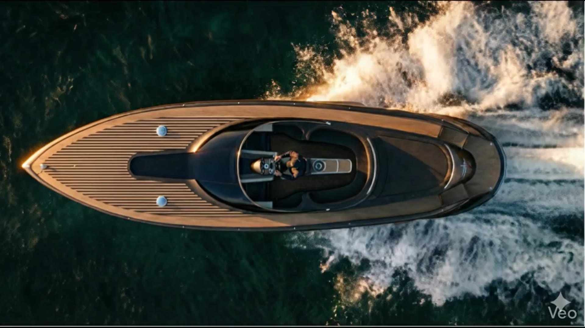
01 / Collezione
Collezione
For the Love of the Water
Otto barche. Otto personalità. Eight original nautical design studies.
Collezione / 01
Ogni Barca, un Carattere
Eight Distinct Characters
Some boats express their character through pure lines, others through movement, versatility or presence. The VELLARIO collection brings together eight different projects from the original design archive. They are presented individually because each deserves a voice of its own. Explore the concepts through their original imagery and the design ideas that shaped them.
 LA COLLEZIONE 01 / 08Quantum 999Una Linea. Un Carattere.
LA COLLEZIONE 01 / 08Quantum 999Una Linea. Un Carattere. LA COLLEZIONE 02 / 08MAS 36Lo Spirito del Gran Turismo.
LA COLLEZIONE 02 / 08MAS 36Lo Spirito del Gran Turismo. LA COLLEZIONE 03 / 08MAS 52Eleganza in Movimento.
LA COLLEZIONE 03 / 08MAS 52Eleganza in Movimento. LA COLLEZIONE 04 / 08MAS 56La Forza dell'Equilibrio.
LA COLLEZIONE 04 / 08MAS 56La Forza dell'Equilibrio.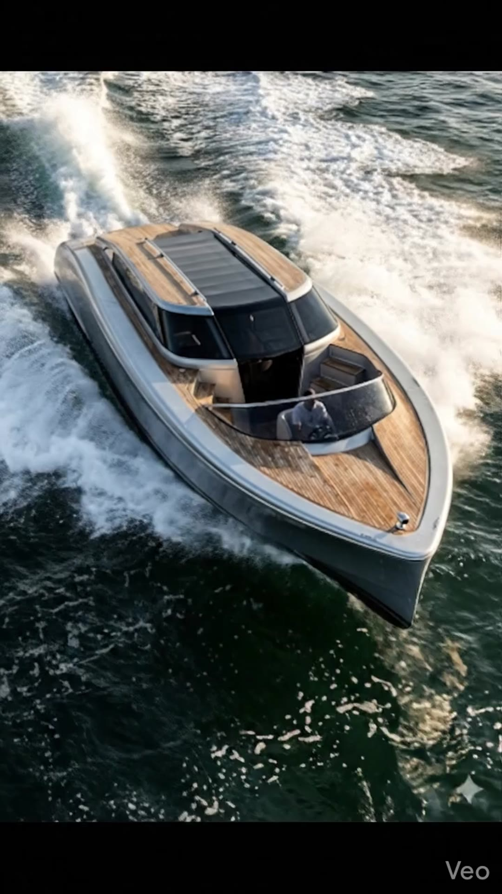
LA COLLEZIONE 05 / 08LariocabL'Essenza del Lago. LA COLLEZIONE 06 / 08FY70Lo Stile Senza Compromessi.
LA COLLEZIONE 06 / 08FY70Lo Stile Senza Compromessi. LA COLLEZIONE 07 / 08GranTender 72Presenza. Movimento. Libertà.
LA COLLEZIONE 07 / 08GranTender 72Presenza. Movimento. Libertà. LA COLLEZIONE 08 / 08Gran MarlinL'Anima del Mare Aperto.
LA COLLEZIONE 08 / 08Gran MarlinL'Anima del Mare Aperto.
La Forma del Desiderio
La Forma del Desiderio
A collection of distinct original design studies.
Every VELLARIO design begins with an idea of character. These eight studies come from an original nautical design archive, where each silhouette and arrangement was developed around its own intentions. The images offer a first encounter with these ideas; the design house's next chapter is to refine their distinct personalities into a coherent collection.

Su Misura
Su Misura
Individuality without compromising character.
Su Misura is not the promise of unlimited choice. It is the ability to understand an individual taste and translate it into thoughtful details without losing the character of the design. The scope of VELLARIO personalisation will be established through future product development.
Collezione / 04
Un Invito Personale
A memorable experience begins long before a boat enters the water. The VELLARIO approach to the future owner relationship is intended to be personal, discreet and informed by design. Discover the collection, understand the characters and follow the design house as that relationship takes shape.
ESPLORA ContactsEight ways
to feel alive.
Otto studi originali. Caratteri diversi, un'unica idea di vita sull'acqua.
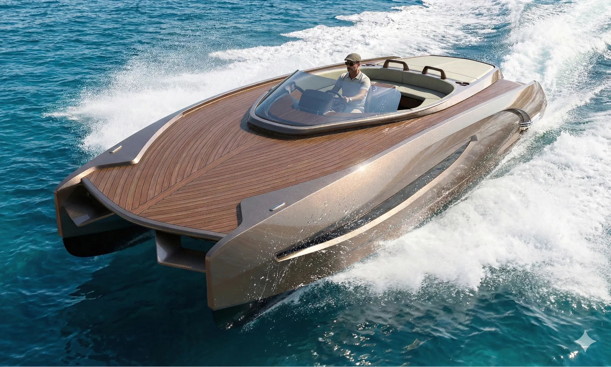
01 / 08 · DESIGN STUDYQuantum 999Una linea. Un carattere.↗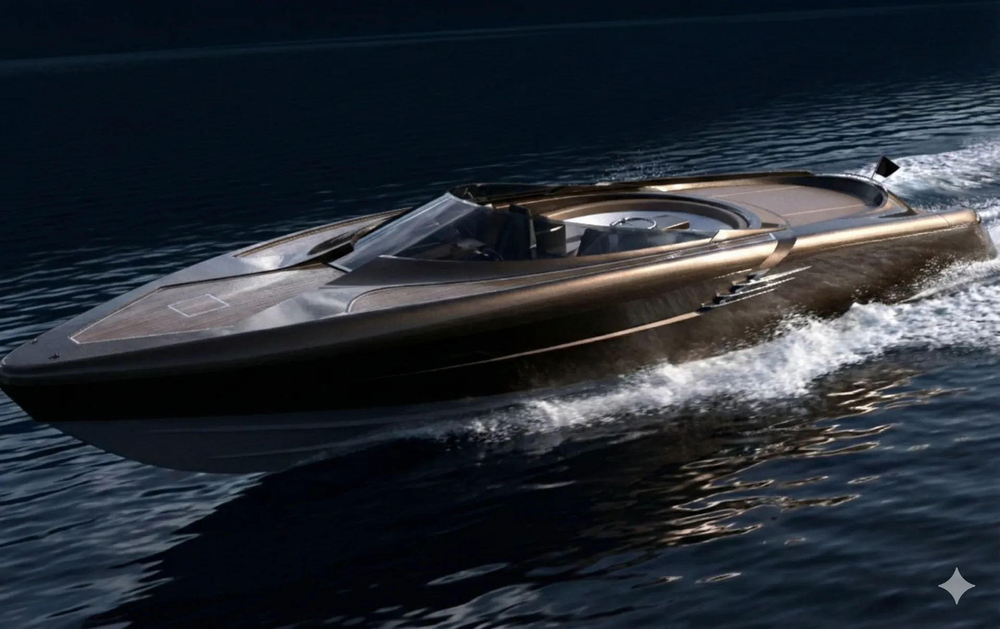
02 / 08 · DESIGN STUDYMAS 36Lo spirito del Gran Turismo.↗ 03 / 08 · DESIGN STUDYMAS 52Eleganza in movimento.↗
03 / 08 · DESIGN STUDYMAS 52Eleganza in movimento.↗ 04 / 08 · DESIGN STUDYMAS 56La forza dell'equilibrio.↗
04 / 08 · DESIGN STUDYMAS 56La forza dell'equilibrio.↗ 05 / 08 · DESIGN STUDYLariocabL'essenza del lago.↗
05 / 08 · DESIGN STUDYLariocabL'essenza del lago.↗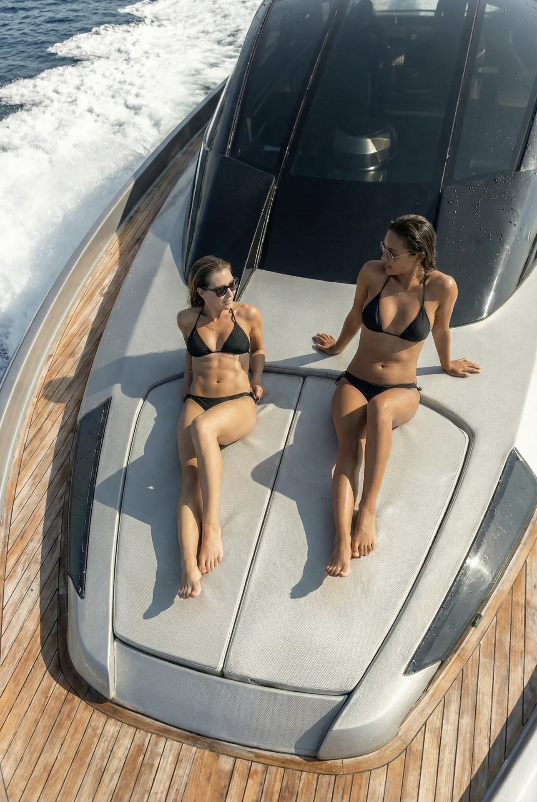
06 / 08 · DESIGN STUDYFY70Lo stile senza compromessi.↗ 07 / 08 · DESIGN STUDYGranTender 72Presenza. Movimento. Libertà.↗
07 / 08 · DESIGN STUDYGranTender 72Presenza. Movimento. Libertà.↗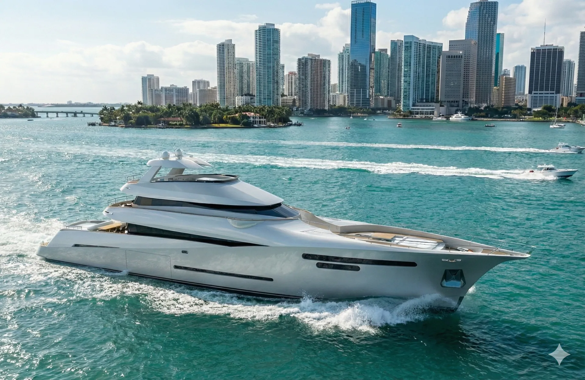
08 / 08 · DESIGN STUDYGran MarlinL'anima del mare aperto.↗VELLARIO / ARCHIVIO VISIVO
La Collezione, in movimento
ORIGINAL DESIGN STUDIES · NON PRODUZIONE VELLARIO Quantum 999DESIGN STUDY · ORIGINAL ARCHIVE
Quantum 999DESIGN STUDY · ORIGINAL ARCHIVE Quantum 999IL FILM · DESIGN STUDYMAS 36DESIGN STUDY · ORIGINAL ARCHIVE
Quantum 999IL FILM · DESIGN STUDYMAS 36DESIGN STUDY · ORIGINAL ARCHIVE MAS 36IL FILM · DESIGN STUDY
MAS 36IL FILM · DESIGN STUDY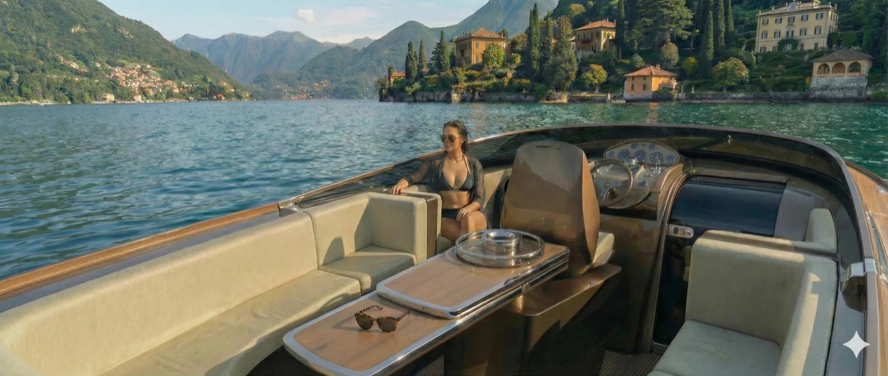
MAS 52DESIGN STUDY · ORIGINAL ARCHIVE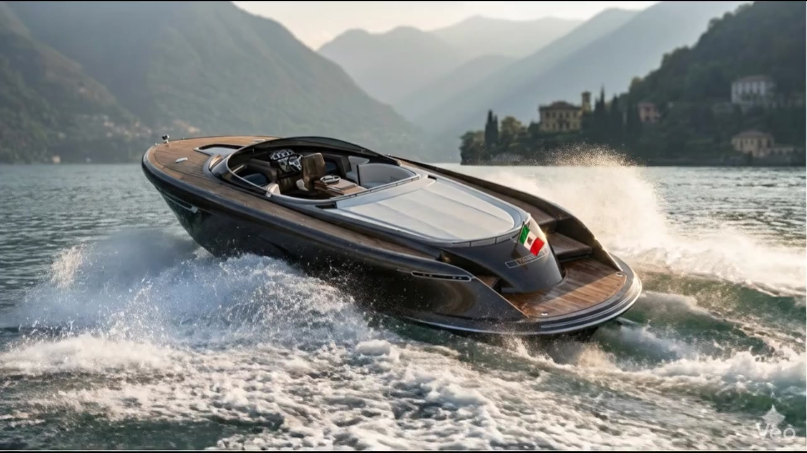
MAS 52IL FILM · DESIGN STUDY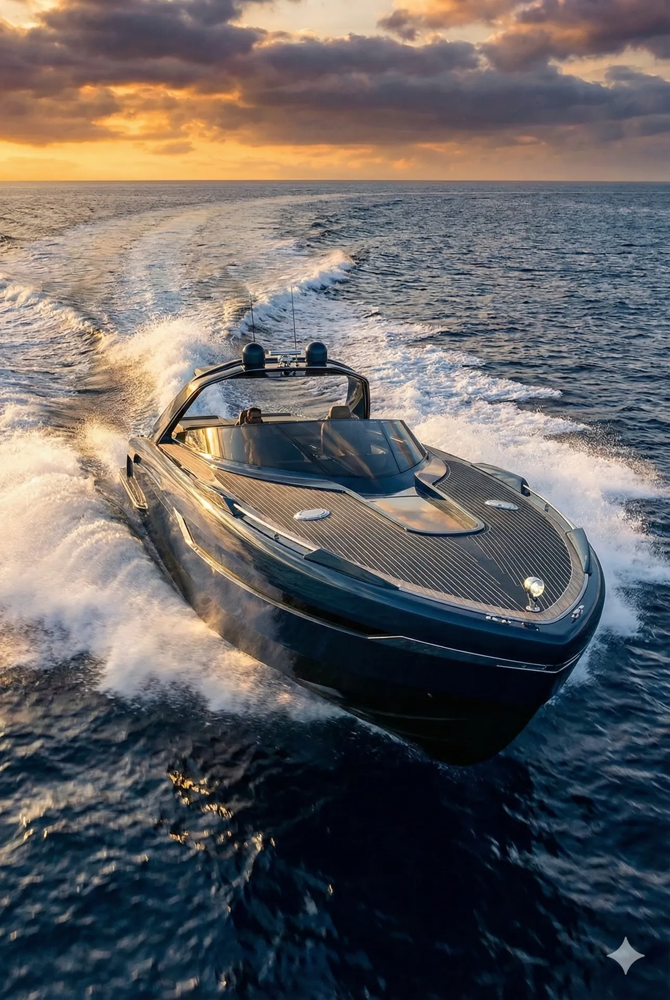
MAS 56DESIGN STUDY · ORIGINAL ARCHIVE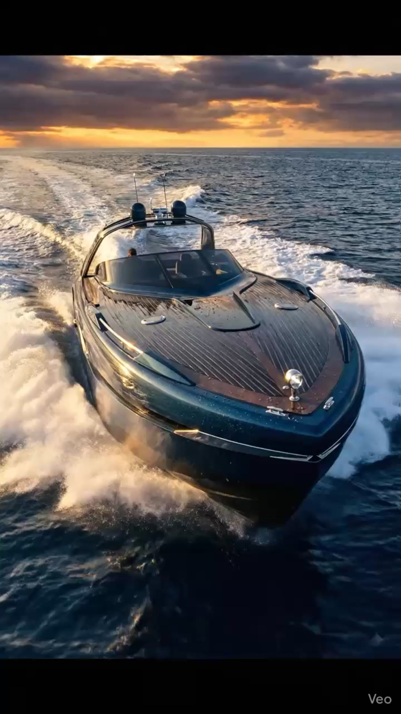
MAS 56IL FILM · DESIGN STUDYLariocabDESIGN STUDY · ORIGINAL ARCHIVE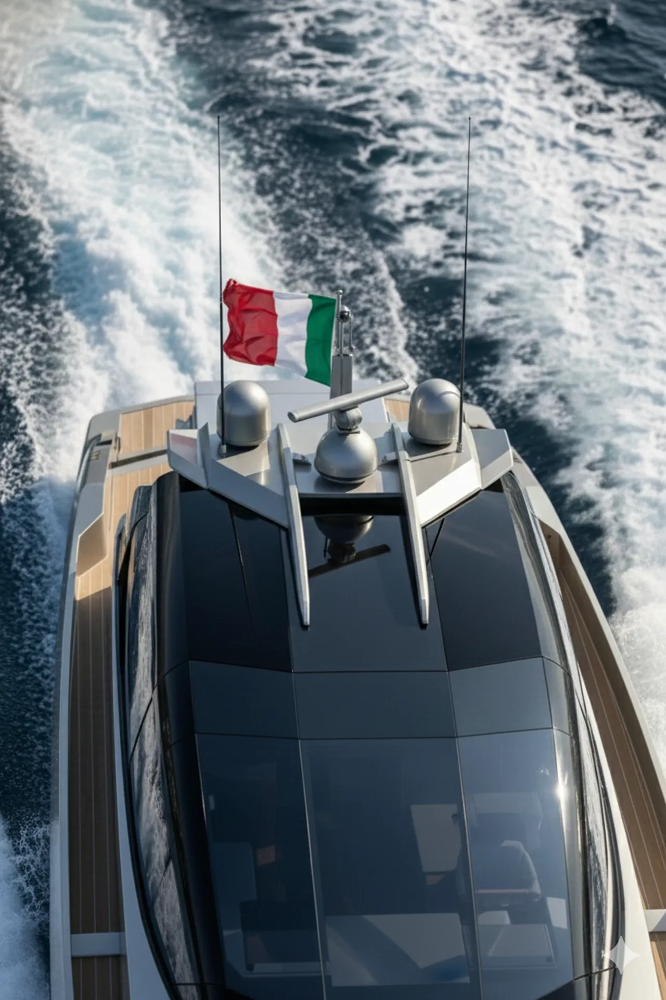
FY70DESIGN STUDY · ORIGINAL ARCHIVE FY70IL FILM · DESIGN STUDY
FY70IL FILM · DESIGN STUDY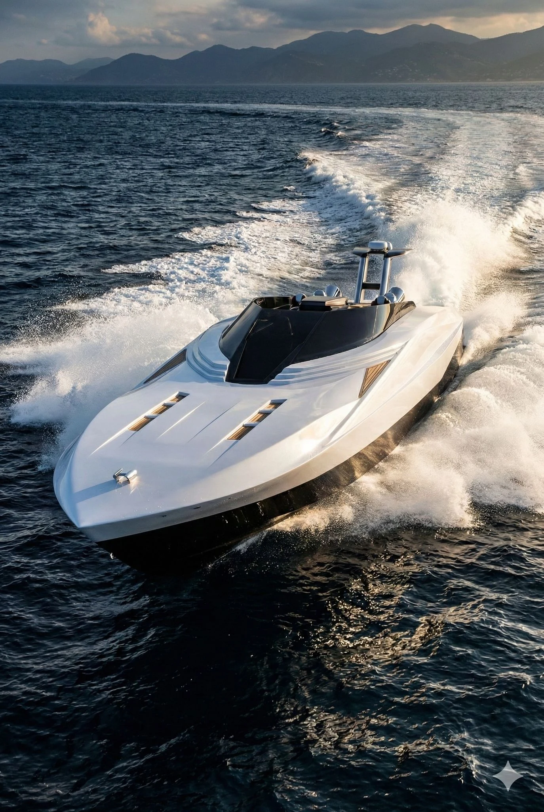
GranTender 72DESIGN STUDY · ORIGINAL ARCHIVE GranTender 72IL FILM · DESIGN STUDY
GranTender 72IL FILM · DESIGN STUDY Gran MarlinDESIGN STUDY · ORIGINAL ARCHIVE
Gran MarlinDESIGN STUDY · ORIGINAL ARCHIVE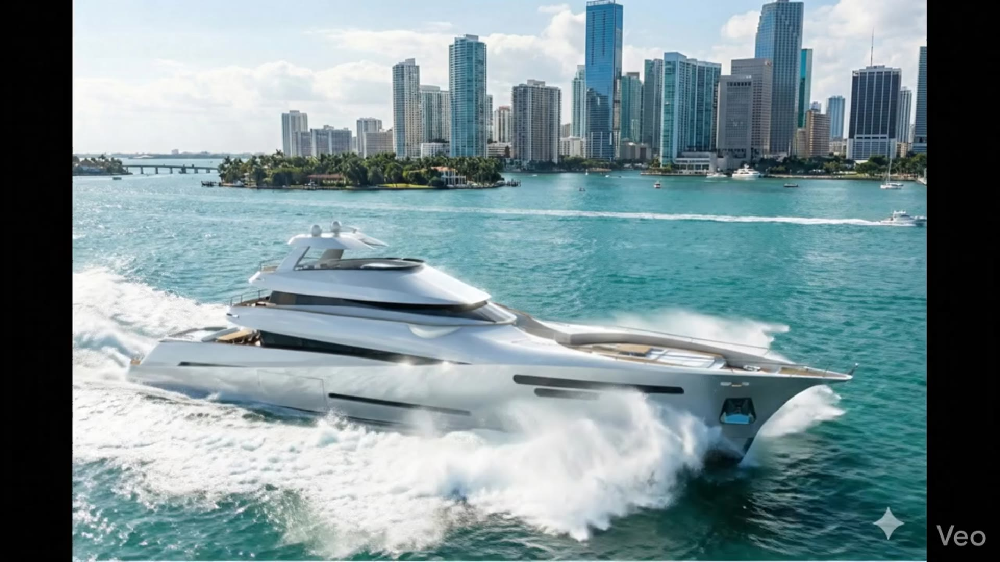
Gran MarlinIL FILM · DESIGN STUDY